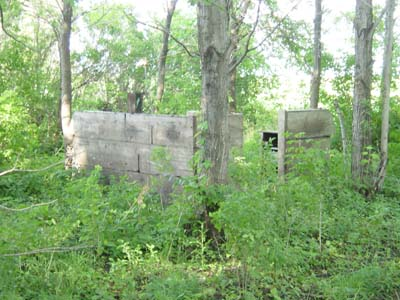
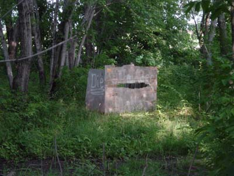

< Back
The Thunder Mallets, rivals of the Pelvic Thrusters. The base may only have two and a half walls, but it cannot be approached from behind.
The main base:

A sentry base for defending the perimeter:
